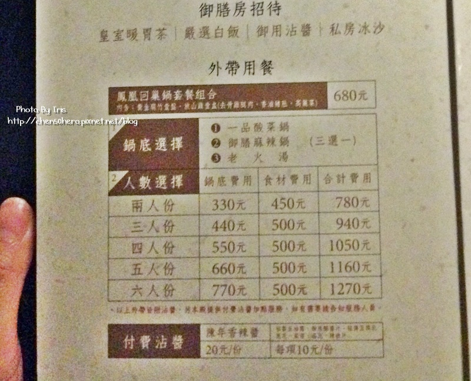
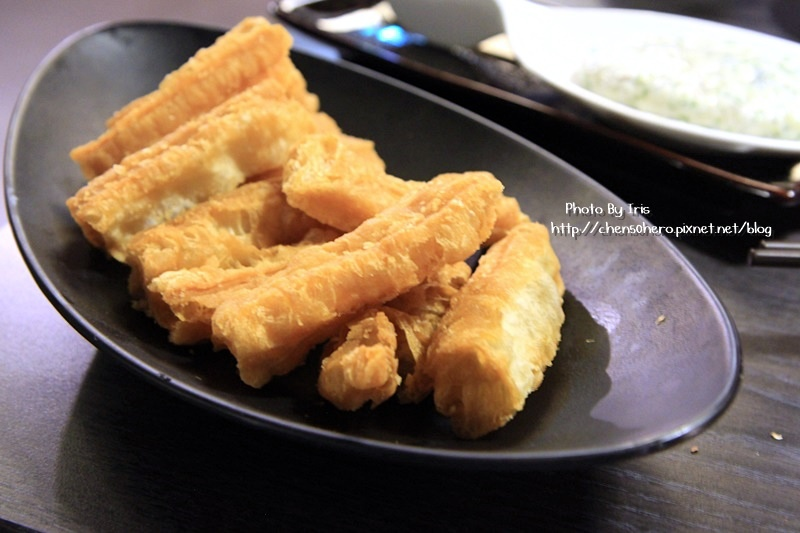

一進門服務生會一口同聲的說:歡迎來用膳!!(還滿有趣的:P) 裝潢好氣派!!用餐空間很寬敞，也有包廂，很適合聚餐～
店裡店外都有兵馬俑出現，店外那兩尊半夜路過應該會被嚇到xD
唯一吃到飽的花生~
白飯自行添加噢!!醬料滿多種的。 不過璇子覺得『這一鍋』不用加醬料就很好吃了
菜單好精緻～有種聖旨到的感覺!!!
回家才發現網路上沒有菜單價格耶.. 璇子才拍了一張消費方式而已(還很模糊xD)各位客官加減看啦~ 一開始服務生講解時璇子以為光是湯頭就一個人590元!!嚇死人xD 後來結帳時4個人2023元，總之是誤會一場，哈哈!!
我們點了龍鳳鴛鴦鍋(御膳麻辣鍋&老火湯)價格:110元/人+150元/桌 兩款湯頭璇子都好喜歡，煮滾後可以先嚐一口老火湯的滋味，濃郁中帶點胡椒的香氣，還不賴～
有些麻辣鍋會辣到肚子很不舒服，但『這一鍋』的屬於麻但不會太辣，口味也算重，屬於比較溫和的麻辣鍋。 可以做到麻而不辣又有麻辣鍋該有的重口味，『這一鍋』在璇子心目中悄悄變成第一名了xD 鴨血&豆腐吸飽了湯汁，會讓人一直續加啊!!!
急凍鮮蝦 慶開幕只要5元，有賺到的fu~哈哈!! 蝦子有新鮮噢~
五行水晶餃 開幕慶打卡就送 大概煮個10分鐘就可以吃囉，皮不會太厚，也很Q彈。 要顧一下，因為煮太久皮會破，然後就從鍋子裡消失了xD
翡翠鮮蝦滑，吃起來有脆脆的口感。
新鮮又大片的高麗菜
麻辣鍋一定要搭配的油條，不過就沒什麼特別囉!!
這一鍋必點:神仙牛肉 送來時乾冰沒那麼多了，拍不出騰雲駕霧的感覺xDD 服務生說下鍋刷三秒就可以吃，軟嫩的無骨牛小排肉質很棒，不用沾醬汁就很夠味啦
雪花牛 擺盤都好美麗～但吃完神仙牛肉就覺得雪花牛soso!!
這款松阪豬更漂釀啊!!花朵都來了xD
別看它小小一朵，一朵有10片，份量還OK
服務生說一定要整朵下去會有百花齊放的感覺~我是沒看到啦xD
松阪豬厚度夠，口感也很脆，真的很好吃!!璇子認為這道也必點
最後的冬瓜檸檬冰沙，用試管瓶裝也是賣點之一，很特別呢!!
雖然是新開幕的但是服務生感覺都訓練有素，和客人應對也都不錯!! 價格雖然偏貴但是用餐環境和食材有成正比，璇子滿喜歡的囉，冬天即將到來，火鍋模式正式啟動xD
引自:http://chen50hero.pixnet.net/blog/post/188782284-%E3%80%90%E6%96%B0%E7%AB%B9%C3%97%E7%BE%8E%E9%A3%9F%E3%80%91%E7%AB%B9%E5%8C%97%E9%80%99%E4%B8%80%E9%8D%8B%E7%9A%87%E5%AE%A4%E7%A7%98%E8%97%8F%E9%8D%8B%E7%89%A9%E2%99%A5%E7%9A%87